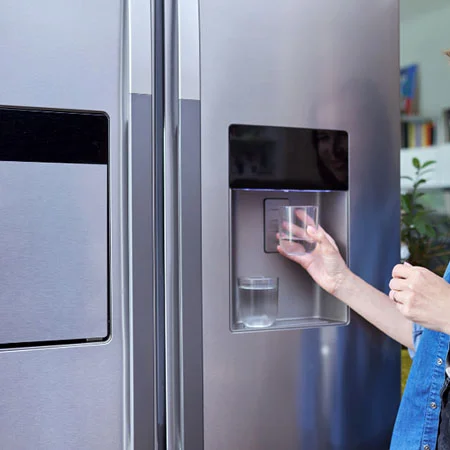
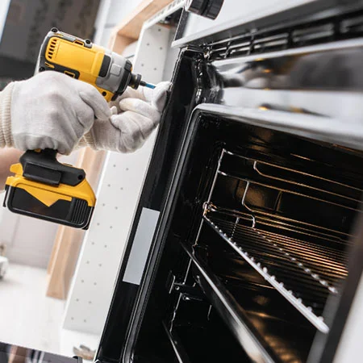
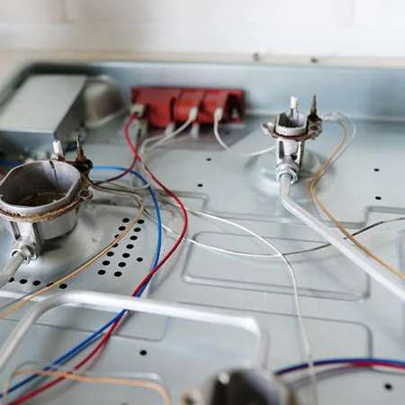
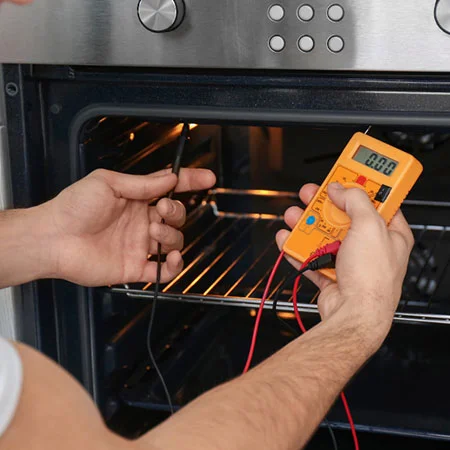
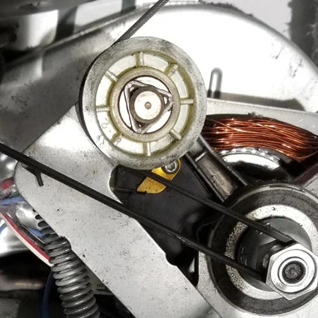
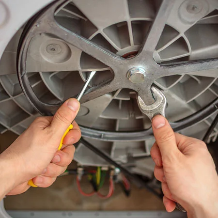
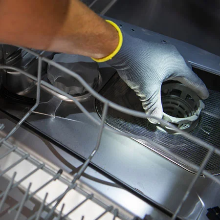
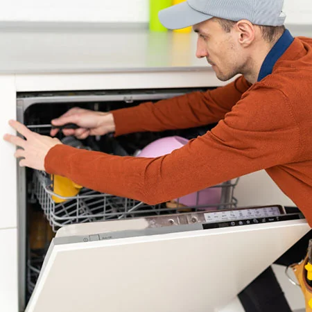

Energy Efficient Appliances
Energy Efficient Appliances in Auburn, CA Save Money, Reduce Waste, and Make Smarter Appliance Choices Why Energy Efficiency Matters? Energy-efficient appliances aren’t just a trend—they’re…
Read MoreYour Go-To Guide for Appliance Knowledge in Auburn, CA
CALL US NOW (530) 447-8105Looking to learn more about your home appliances? You’ve come to the right place. The Online Resources section of our website is designed to give Auburn homeowners helpful information about appliance care, repair insights, and common problems. Whether you’re trying to figure out what’s wrong with your dishwasher or you want to learn how to get the most out of your refrigerator, this page is where your journey starts.
Use the sections below to explore topics that matter most to homeowners who want to keep their appliances running longer and more efficiently. We’ll be updating these pages regularly with helpful articles, how-tos, and troubleshooting advice straight from experienced appliance repair professionals.
Appliance Types
Want to learn more about the different appliances in your home? This section covers essential kitchen and laundry appliances—from refrigerators and ovens to washing machines and dryers. Whether you’re looking into common features, energy efficiency, or maintenance basics, this guide will break down each type and what makes it unique.

Energy Efficient Appliances in Auburn, CA Save Money, Reduce Waste, and Make Smarter Appliance Choices Why Energy Efficiency Matters? Energy-efficient appliances aren’t just a trend—they’re…
Read More
Smart Appliances in Auburn, CA Connected Technology Meets Everyday Convenience—Here’s What You Should Know What Are Smart Appliances? Smart appliances bring advanced technology into your…
Read More
Gas Appliances in Auburn, CA Reliable, Efficient, and Powerful—But They Need the Right Care Understanding the Power of Gas Appliances Gas-powered appliances are a favorite…
Read More
Electric Appliances in Auburn, CA Powering Homes with Performance, Precision & Efficiency Why Electric Appliances Are a Smart Choice Electric appliances are a staple in…
Read More
Commercial Appliance Repair in Auburn, CA Fast, Professional Service for Restaurants, Hotels, Schools, and More Commercial Appliance Solutions Built for Auburn Businesses In the world…
Read MoreTips
Discover maintenance tips, usage best practices, and seasonal checklists that can help extend the life of your appliances. Whether it’s how often to clean your dryer vent or the best way to load your dishwasher, this section offers real-world advice to keep everything running smoothly.

Appliance Repair FAQ for Auburn, CA Common Questions and Expert Answers from Local Appliance Technicians General Appliance Repair Questions Troubleshooting & Performance Issues Advanced &…
Read More
Emergency Appliance Repair in Auburn, CA Fast, Dependable Service When You Need It Most When Appliances Break at the Worst Time, We’re Here to Help…
Read More
Appliance Repair Tips Smart Fixes & Simple Steps Every Auburn Homeowner Should Know Before You Call—Try These Tips First Not every appliance problem requires professional…
Read More
Appliance Repair Cost in Auburn, CA What to Expect When Budgeting for Appliance Service How Much Does Appliance Repair Typically Cost? One of the first…
Read More
When It’s Time To Replace Your Appliance Know When to Repair—And When to Say Goodbye Should I Repair It or Replace It? It’s one of…
Read MoreProblems
Experiencing an issue? From weird noises and leaks to power failures and error codes, this section helps you understand what might be going wrong. We’ll cover the most common appliance problems and give you the guidance you need to know when it’s time to call in a professional.

Why Is My Auburn Dishwasher Leaking? Common Causes, Quick Fixes, and When to Call a Local Repair Pro A Leaking Dishwasher Is More Than Just…
Read More
Why Is My Auburn Dishwasher Not Draining? Common Drainage Issues, What to Check, and When to Call a Repair Pro Water Sitting at the Bottom…
Read More
Why Is My Auburn Dishwasher Making Loud Sounds? Strange Noises, Possible Causes, and How to Quiet Things Down Noisy Dishwasher? You’re Not Alone Dishwashers aren’t…
Read More
Why Won’t My Auburn Dishwasher Turn On? Common Causes, Quick Fixes, and When to Call a Local Repair Expert Staring at a Silent Dishwasher? If…
Read More
Why Is My Auburn Dishwasher Not Drying Dishes? What’s Causing the Problem—and How to Get Your Dishwasher Working Right Again Wet Dishes After a Full…
Read More
Why Is My Auburn Refrigerator Not Cooling? Common Causes, What to Check, and When to Call a Local Repair Expert Warm Fridge? You’re in the…
Read More
Why Is My Auburn Refrigerator Water Dispenser Not Working? Troubleshooting Common Issues and How to Fix Them Fast Not Getting Water From the Fridge Dispenser?…
Read More
Why Is My Auburn Refrigerator Noisy? Common Causes of Loud Fridge Sounds—and What to Do About Them Loud Fridge Keeping You Up at Night? All…
Read MoreWhen your business depends on working appliances, don’t leave repairs to chance. Auburn Appliance Repair connects you with experienced commercial appliance technicians who know how to get the job done right—safely, efficiently, and with minimal interruption to your operation.